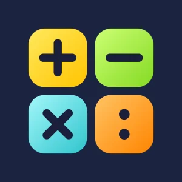

Geografia Amica
Esplora, trova e scrivi luoghi
Geografia Amica accompagna chi sta imparando la geografia, e chi fa ancora fatica, su carte vere e chiare: l'Italia delle regioni e dei capoluoghi, mari, monti, fiumi e laghi, gli stati e le capitali d'Europa, i continenti, gli oceani e gli stati del mondo. Un luogo alla volta, con la voce che legge i nomi, sempre al ritmo dell'alunno.

In breve
Per chi è?
Per la scuola primaria e secondaria, utile anche in caso di DSA e BES. L'aspetto è sobrio, adatto sia ai più piccoli sia ai ragazzi più grandi.
Quanto costa?
Si scarica gratis, e le quattro attività su tutte le carte restano gratis. Le lezioni delle medie si comprano dentro l'app, un anno di studio alla volta, una volta sola, con la prova gratis di 14 giorni; ogni anno comprende anche il gioco con la classe, la mia classe e il registro. I ragazzi entrano nel gioco sempre gratis.
Su quali dispositivi?
iPhone e iPad, con iOS 15 o successivo. Sull'iPad i nomi si possono scrivere anche a mano, con Apple Pencil.
Serve Internet?
No, e non serve un account: le carte sono dentro l'app. Nomi degli alunni, progressi e impostazioni restano sul dispositivo. Il gioco con la classe usa solo la rete locale tra i dispositivi della classe.
Dove si usa
- Elementari Scuola primaria Le regioni e i capoluoghi d'Italia, i mari, i monti, i fiumi e i laghi, con i nomi divisi in sillabe a due colori e la voce che li legge.
- Medie Scuola secondaria di primo grado L'Italia, l'Europa e il mondo su carte vere, fino alla carta muta, e 90 lezioni per i tre anni delle medie, con la lezione di oggi sulla LIM e il gioco con la classe.
Che cosa fa
Esploro: un luogo alla volta
- A ogni tocco di AVANTI si illumina un luogo della carta, in un ordine sensato: le regioni, per esempio, da nord a sud.
- Il nome compare in stampato maiuscolo, diviso in sillabe a due colori, e la voce lo legge.
- Sotto il nome una sola informazione: il capoluogo, la capitale, dove sfocia il fiume, quanto è alto il monte.
Trovo: tocca la Lombardia
- L'app chiede un luogo e l'alunno lo tocca sulla carta.
- Nessun segno rosso: dopo due tocchi sbagliati il luogo giusto lampeggia piano.
Scrivo: con la tastiera o con Apple Pencil
- Un luogo si illumina e l'alunno ne scrive il nome, il capoluogo o la capitale, anche sotto dettatura.
- Una tastiera grande con una casella per lettera; su iPad si scrive anche a mano con Apple Pencil.
Carta muta
- La carta senza nomi e pochi nomi alla volta da trascinare al loro posto.
- Si stampa la scheda da fare su carta, oppure il lavoro fatto sullo schermo, con nome e data.
Le carte
- Italia: regioni e capoluoghi. Italia fisica: mari, monti e vulcani, 14 fiumi, 7 laghi.
- Europa: 47 stati e le loro capitali. Mondo: 6 continenti e 5 oceani.
- L'insegnante sceglie i luoghi da studiare e salva il gruppo con un nome suo.
Alunni e progressi
- Più alunni, ognuno con impostazioni, obiettivi e progressi suoi.
- Il calendario, i luoghi giusti al primo colpo, quelli da ripassare e un PDF per la verifica.
Le lezioni delle medie
- 90 lezioni in tre anni di studio: l'Italia, l'Europa, il mondo. Una a settimana, in blocchi di sei.
- Ogni lezione in versione base e avanzato, scelta alunno per alunno; le schede del base si leggono passo per passo, come testo o come mappa, e la voce le legge.
- Impara, esercitati, compiti e la prova della lezione; alla fine di ogni blocco la SFIDA, anche da stampare, con le soluzioni.
In classe
- La lezione di oggi sulla LIM: la scaletta della lezione in sei passi, per tutta la classe.
- Il gioco con la classe: a squadre, ognuno con il suo telefono o tablet, nella rete Wi-Fi della classe, senza Internet.
- La SFIDA con la classe e il registro di ogni ragazzo, in PDF ed Excel, solo sull'iPad del prof.
Il libro di testo
Ci sarà anche il libro di testo di Geografia Amica. Quando è pronto, lo trovi qui.
Geografia Amica, in numeri
- 90 lezioni per le medie
- 3 anni di studio: Italia, Europa, mondo
- 2 versioni di ogni lezione: base e avanzato
- 15 SFIDE di ripasso
Le altre app
- Leggo e Scrivo Sillabe, ricalco e pregrafismo
-

Matematica Amica Conti in colonna passo passo -
 Solfeggio e Teoria Lezioni, ritmo e dettati
Solfeggio e Teoria Lezioni, ritmo e dettati
-
 Tecnologia Amica Disegno, materiali e coding
Tecnologia Amica Disegno, materiali e coding
Usi Geografia Amica? Se trovi un problema o hai un'idea per migliorarla, scrivimelo.